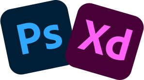
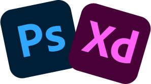

Geek depuis toujours, j’ai commencé en autodidacte à apprendre les bases du graphisme via des tutoriels sur internet. J’ai fait mes débuts bénévolement au sein de l’association Pink Ward en 2013 (association qui avait pour objectif de promouvoir la mixité dans les jeux -vidéos), j’y étais graphiste et j’ai adoré travailler sur la refonte de leur image.
Dans le sud de la France, où j’ai vécu quatre années, je me suis essayé à différents métiers en passant de préparateur de commande à médiateur éducatif ou encore veilleur de nuit. Ces expériences m’ont aidé à me tourner professionnellement vers le milieu du web et donc me former au métier de Webdesigner que j’ai obtenu à Mandelieu en 2018. C'est ici que je me suis découvert une passion pour les langages web tel que le html et le css.
Grâce à la formation de Chef de projet Web que j’ai suivie à Lille, j’ai pu aiguiser mon regard sur un projet client complet allant de l’étude de marché jusqu’au développement du site internet. Cela m’a permis de connaître et de comprendre les rôles et les missions de chacun : communication, stratégie, UI/UX design, technique… cette expérience a confirmé mon désir de travailler en tant que Webdesigner, UI/UX Designer, Intégrateur.
Télécharger mon cv
 
